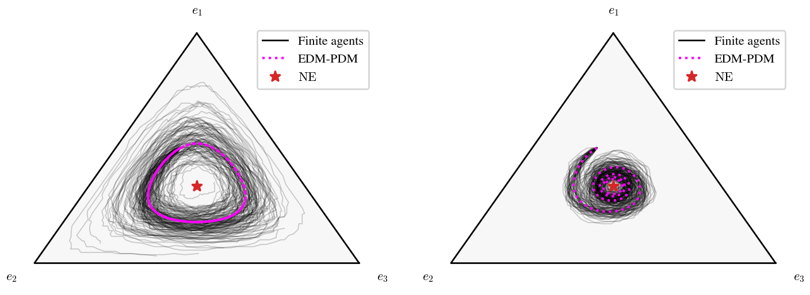
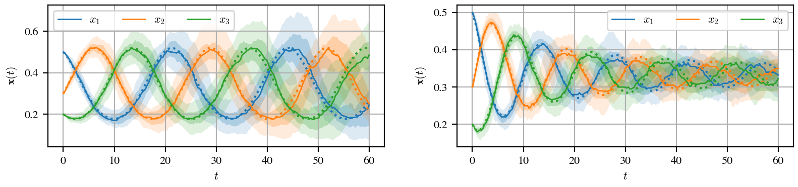
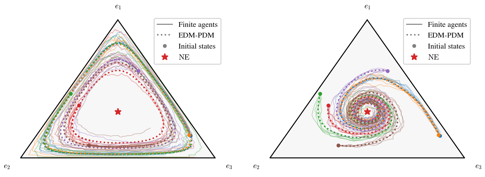

Ensembles of simulations¶
Finite-agent simulations are stochastic: two runs from the same initial state follow different trajectories. A single run shows one possible outcome, while an ensemble of runs shows the distribution of outcomes, from the same initial state or from different ones. This example revisits the Rock-Paper-Scissors game and compares the Replicator and Smith protocols over 50 runs each, with a small population of 200 agents.
1import numpy as np
2from popgames import (
3 SinglePopulationGame,
4 PayoffMechanism,
5 PoissonRevisionProcess,
6 Simulator,
7)
8from popgames.revision_protocol import Replicator, Smith
9
10A = np.array([[0, -1, 1], # Rock
11 [1, 0, -1], # Paper
12 [-1, 1, 0]], # Scissors
13 dtype=float)
14
15def fitness_function(x):
16 return np.dot(A, x)
17
18population_game = SinglePopulationGame(
19 num_strategies=3,
20 fitness_function=fitness_function,
21)
22
23payoff_mechanism = PayoffMechanism(
24 h_map=fitness_function,
25 n=3,
26)
27
28revision_protocols = {
29 'Replicator': Replicator(scale=0.5),
30 'Smith': Smith(scale=0.25),
31}
32
33x0 = np.array([0.5, 0.3, 0.2]).reshape(3, 1)
34
35for name, revision_protocol in revision_protocols.items():
36 sim = Simulator(
37 population_game=population_game,
38 payoff_mechanism=payoff_mechanism,
39 revision_processes=PoissonRevisionProcess(
40 Poisson_clock_rate=1,
41 revision_protocol=revision_protocol,
42 ),
43 num_agents=200,
44 )
45
46 # 50 independent runs from x0, sampled at 201 evenly spaced times in [0, 60]
47 sim.reset(x0=x0)
48 ens = sim.run_ensemble(T_sim=60, num_runs=50, seed=0)
49
50 # x1 * x2 * x3 is conserved by the replicator dynamics (EDM), but not by the finite population
51 print(f'{name}: x1 x2 x3 = {np.prod(x0):.4f} at t=0, '
52 f'{np.prod(ens.final().x, axis=1).mean():.4f} at t=60 (mean over the runs)')
53
54 ens.plot(plot_type='ternary', plot_deterministic_approximation=True)
55 ens.plot(plot_type='bands', variables=['x'], plot_deterministic_approximation=True)
run_ensemble() resets the simulator to the same initial state before each run (x0,
set by the last reset), and samples every run at common times (t_eval, 201 evenly spaced times by default).
Between revision events the state of a finite population is constant, so the value of a run at time \(t\) is its state
after the last revision event at or before \(t\). The result is an EnsembleResult with arrays of
shape (M, n, K): one leading axis for the \(M\) runs, followed by the layout of sim.log.
Trajectories on the simplex¶
ens.plot(plot_type="ternary") draws every run as a semi-transparent line (Replicator on the left, Smith on the
right). The dotted line is the deterministic approximation (EDM).


Under the replicator dynamics, every trajectory is a closed orbit, so the EDM has no “restoring force”: the random fluctuations of the finite population accumulate, and the runs drift across orbits. Under the Smith dynamics, the NE attracts nearby states, and the runs stay close to it.
Quantile bands¶
ens.plot(plot_type="bands") shows the median of each strategy over the runs (solid lines), with the bands
containing 90% and 50% of the runs at each time (shaded regions), and the EDM (dotted lines).


The bands of the Replicator widen over time: the runs drift across orbits and out of phase with each other. The bands of the Smith protocol remain narrow.
Other plot types¶
ens.plot(plot_type="final") shows where the runs are at the final time (or at any time t); see the
coordination game example for a use case. The same plot types are available for multi-population games and payoff dynamics models: bands also plots the
payoffs p and the PDM state q, and kpi plots the bands of any KPI (by default, the distance to the GNE).
Different initial states¶
The seeds and the initial states of run_ensemble can be shared by all runs (as above) or given per run:
seed: an integer (orNone) derives independent seeds for the runs, while a sequence gives the seed of each run, e.g.,seed=[7] * Mto use the same seed in all runs.x0: an array of shape(n, 1)is shared by all runs, while an array of shape(M, n, 1)gives the initial state of each run (and similarlyq0for payoff dynamics models).
The number of runs is the length of the per-run arguments. sample_initial_states() samples
initial states uniformly at random on the simplex, with its own seed. The following example samples 6 initial states
and simulates 5 runs from each of them:
1import numpy as np
2from popgames import (
3 SinglePopulationGame,
4 PayoffMechanism,
5 PoissonRevisionProcess,
6 Simulator,
7)
8from popgames.revision_protocol import Replicator, Smith
9from popgames.utilities import sample_initial_states
10
11A = np.array([[0, -1, 1], # Rock
12 [1, 0, -1], # Paper
13 [-1, 1, 0]], # Scissors
14 dtype=float)
15
16def fitness_function(x):
17 return np.dot(A, x)
18
19population_game = SinglePopulationGame(
20 num_strategies=3,
21 fitness_function=fitness_function,
22)
23
24payoff_mechanism = PayoffMechanism(
25 h_map=fitness_function,
26 n=3,
27)
28
29# 6 initial states, sampled uniformly at random on the simplex
30x0s = sample_initial_states(population_game, num=6, seed=1)
31
32for revision_protocol in [Replicator(scale=0.5), Smith(scale=0.25)]:
33 sim = Simulator(
34 population_game=population_game,
35 payoff_mechanism=payoff_mechanism,
36 revision_processes=PoissonRevisionProcess(
37 Poisson_clock_rate=1,
38 revision_protocol=revision_protocol,
39 ),
40 num_agents=200,
41 )
42
43 # 5 runs from each initial state (30 runs), with independent seeds
44 ens = sim.run_ensemble(T_sim=30, x0=np.repeat(x0s, 5, axis=0), seed=0)
45
46 ens.plot(plot_type='ternary', plot_deterministic_approximation=True, alpha=0.4)
Runs with the same initial state form a group. The ternary plot becomes a phase portrait, with one color per group (Replicator on the left, Smith on the right):


The other plots also show one group per initial state: bands plots the bands of each group in separate figures
(or only those of initial_state=g), and kpi and final use one color per group.
Some common designs:
# Same initial state, independent seeds
ens = sim.run_ensemble(T_sim, num_runs=50, x0=x0, seed=0)
# Different initial states, same seed (common random numbers): the runs differ only through their initial state
ens = sim.run_ensemble(T_sim, x0=x0s, seed=[7] * len(x0s))
# Every initial state with R independent seeds (runs grouped by initial state)
ens = sim.run_ensemble(T_sim, x0=np.repeat(x0s, R, axis=0), seed=0)
# Every initial state with the same R seeds
ens = sim.run_ensemble(T_sim, x0=np.repeat(x0s, R, axis=0), seed=np.tile(np.arange(R), len(x0s)))
Working with the results¶
The arrays can also be used directly:
ens.x[r] # run r, shape (n, K), same layout as sim.log.x
ens.x[:, i] # strategy i in all runs, shape (M, K)
ens.mean().x # mean over the runs, shape (n, K)
ens.quantile([0.05, 0.95]).x # shape (2, n, K)
ens.final().x # states at the final time, shape (M, n)
ens.deterministic().x # EDM-PDM from the initial state of each run, shape (M, n, K)
ens.groups[g] # indices of the runs of group g (same initial state)
ens.subset(ens.groups[g]).mean().x # mean over the runs of group g
mean and quantile pool all runs: with several initial states, use subset to compute them per group.
The ensemble is reproducible: with the same seed, run_ensemble returns the same runs. Each run has its own
seed (ens.seeds) and initial state (ens.x0 and ens.q0), so a single run can be reproduced (e.g., to
inspect it in detail with sim.log):
sim.reset(ens.x0[r], ens.q0[r], seed=int(ens.seeds[r]))
sim.run(T_sim=60)
ens.x0 holds the initial states the runs actually started from: reset rounds the requested state to a whole
number of agents per strategy.
Running with the Numba backend¶
Ensembles multiply the number of revision events by the number of runs: this example simulates about \(6 \cdot 10^5\) revision events per protocol, which takes about 15 seconds each with the numpy backend. With the Numba backend, the whole example runs in about two seconds:
sim = Simulator(
population_game=population_game,
payoff_mechanism=payoff_mechanism,
revision_processes=PoissonRevisionProcess(
Poisson_clock_rate=1,
revision_protocol=revision_protocol,
),
num_agents=200,
backend="numba",
)
The fitness function is compiled once per simulator and reused by all the runs of the ensemble.